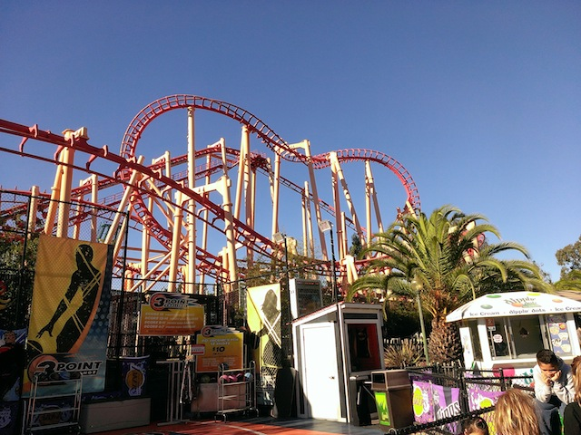
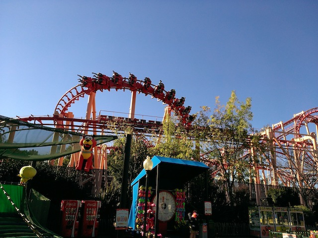
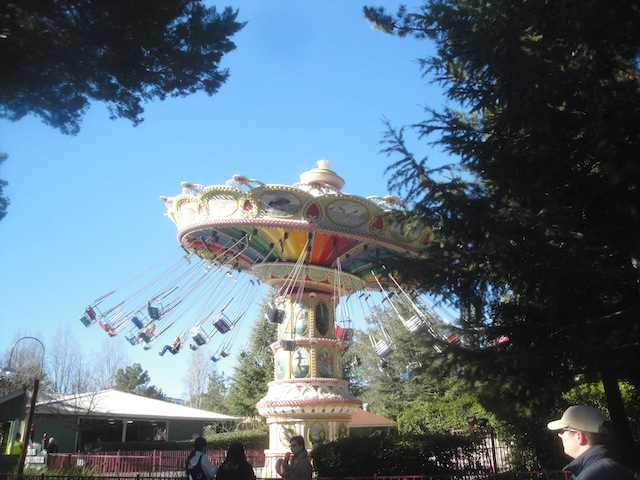
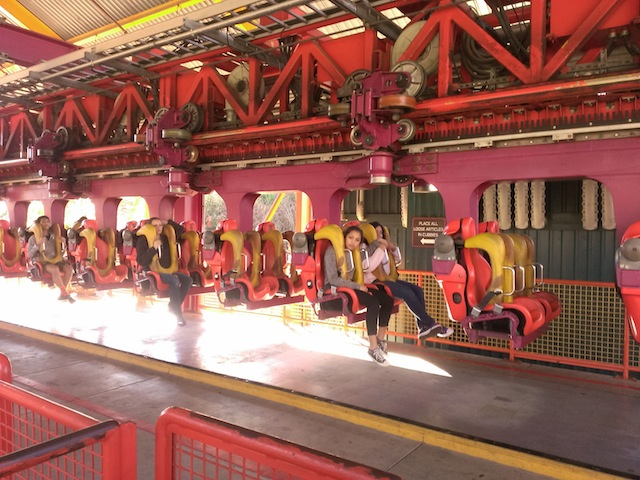

| |
Six Flags Discovory Kingdom 2014
All right. Its time for another spontaneous day trip. Yeah, we drove up to Six Flags Discovory Kingdom for the day from Southern California and back. We're nuts like that. Now you may be wondering why we did this? Well, if you've been reading the site for the past few years, you may have noticed that I kept saying that I was gonna be doing another Nor-Cal Trip this year or the next year, and that kept getting postponed and postponed. I swore I'd do it in 2014, and...money f*cked me over (Stupid Fundraising for 2015). However, I did decide to at least get one of the Nor Cal parks I've been meaning to get back to and head on over to Six Flags Discovory Kingdom.
Ok, I knew that the Oakland Bay was sh*tty and all, but I didn't expect it to LITERALLY look like sh*t!
Yay!! We made it from Ventura to Vallejo in 5.5 hours. Sweet, we're 30 minutes early. =)
"Pathetic puny Star Flyer."
 All right. Let's move onto the main reason I bothered to return to Six Flags Discovory Kingdom today. Superman.
All right. Let's move onto the main reason I bothered to return to Six Flags Discovory Kingdom today. Superman.
The best way for me to describe Superman is that it's like the love-child of Full Throttle, a Sky Loop (Ukko), and Shock. And it is AWESOME, being better than (with the obvious exception of Shock) all those rides.
The launches are fun, there's a good pop of ejector air at the top, I enjoy the hangtime in the inline twist in the sky, and I'm a fan of non-inverting loops. What's not to like?
Hey, I don't mind clones of this popping up all around the world. =)
Roar is one of those coasters that you just sort of forget about. Hell, even when I was riding it, I was just relaxed, thinking about other stuff, and not caring. It's very relaxing in that sense.
"As the 2nd most intellegent species on the planet, I just want to remind you to never go anywhere in the universe without a towel."
Hey. What happened to the penguins?
Insert "Penguins of Madagascar" Joke here.

In good news, Kong got better. Yeah, I bothered to re-ride it after how HORRIBLY it was running last time. But I did, and while it was still bad, it wasn't nearly as bad as it was during Bay Area Bash, which means that Kong is no longer the worst SLC ever. Congratulations Top Gun @ Canada's Wonderland. You're now back to being the worst SLC.

Hey, at least I didn't ride it 6 times like Cody did.
The good news is that Six Flags is also doing Holiday in the Park at other parks like Six Flags Discovory Kingdom, and it was awesome at SFMM, so I'm happy it's spreading. The bad news is that the Holidays are now over (aside from New Years, but be real. These lights aren't for New Years) and this is out of place.

Umm, are these chairswings run by a gasoline powered engine? Cause it certainly sounded like it (I know it's not).
I've always been a fan of these Zamperla Flipping rides. Let's take a spin.
Is it me or did they change these restraints to be super uncomfortable and dig into your chest. Seriously, this was really uncomfortable. The indents inside the OTSRs are not necesarry.
Come on everyone! Into the Blue Hole!
Don't worry. This is the most stable glass in the world. We'll be *crack* Uh-oh.
Can't you see just how misreble all these fish are. =p
Ok, the water might need to be cleaned here (or at least the glass). But hey, I do love these animal parks.
Quit ruining my fun. >=(

All right. Time to marathon V2.
 I know V2 had to be modified from its original design due to height restrictions, but I honestly like this version a little better. It's got a unique spin to it.
I know V2 had to be modified from its original design due to height restrictions, but I honestly like this version a little better. It's got a unique spin to it.
 Wee. Hangtime.
Wee. Hangtime.
We took a ride on Cobra for sh*ts and giggles. Cause hey! Why not! =)
 Oh yeah, and Medusa finally opened back up (we wouldn't drive all the way up here and not ride Medusa, or at least point out why we didn't if we missed it). So now, its time to marathon it.
Oh yeah, and Medusa finally opened back up (we wouldn't drive all the way up here and not ride Medusa, or at least point out why we didn't if we missed it). So now, its time to marathon it.
 And I must say. Medusa is running really good today. Has some airtime on the drop, some good whip, and its running really smoothly. And that concludes our spontaneous day at Six Flags Discovory Kingdom. Yeah, it was a little more crowded than I hoped and we couldn't do much afterwards thanks to our horrifying budgets, but I did get one of the new Nor-Cal credits I've been meaning to get for years now, I enjoyed it, and as a lover of road trips, I had a blast just getting back up here. I'll see you many more times next year 2015. =)
And I must say. Medusa is running really good today. Has some airtime on the drop, some good whip, and its running really smoothly. And that concludes our spontaneous day at Six Flags Discovory Kingdom. Yeah, it was a little more crowded than I hoped and we couldn't do much afterwards thanks to our horrifying budgets, but I did get one of the new Nor-Cal credits I've been meaning to get for years now, I enjoyed it, and as a lover of road trips, I had a blast just getting back up here. I'll see you many more times next year 2015. =)
Home
|